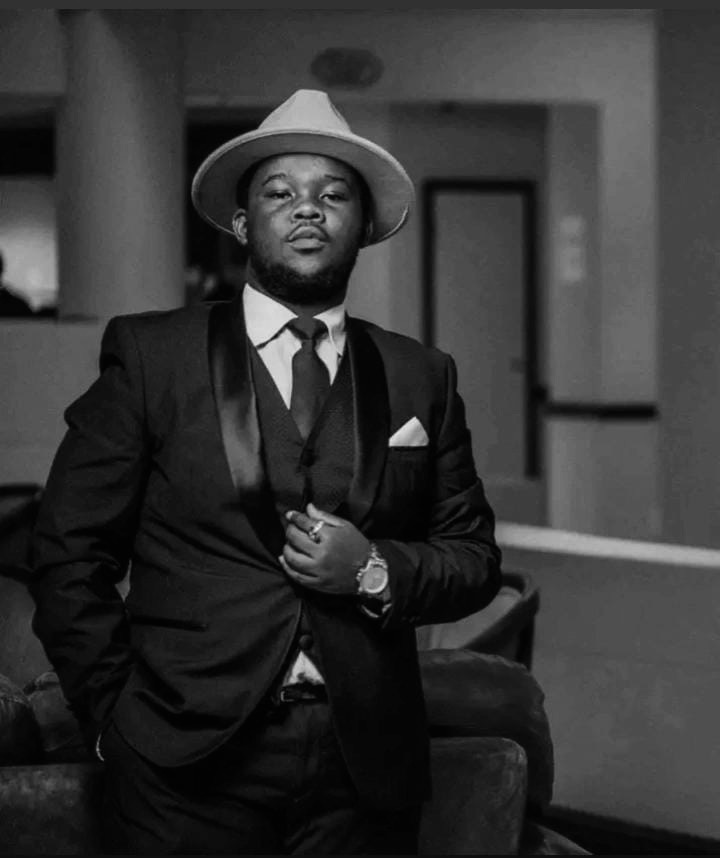
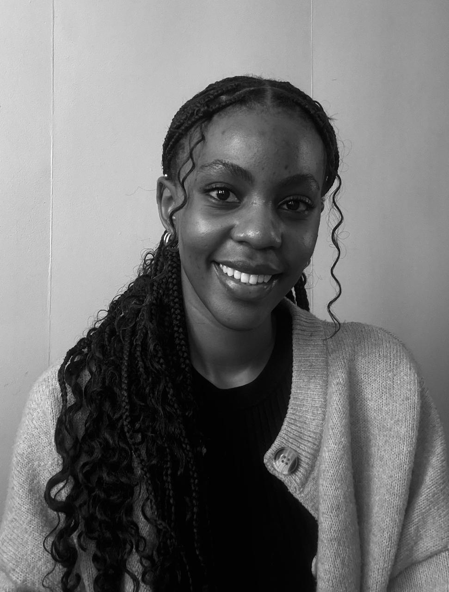

Ubuntu Nexus · Team 22
Ontmoet die Span
Ons is Ubuntu Nexus, ’n span van 6 studente wat Vuka gebou het om Suid-Afrika se informele entrepreneurs in die voedselsektor van gratis, praktiese besigheidsvaardighede te voorsien.

Raelene Dookkoo
Spanleier
Hou toesig oor die hele projek, verseker dat die span op koers bly, bestuur konflikte, koördineer spanaktiwiteite, en verseker dat projekvereistes en sperdatums nagekom word.
Karabo Mhlupheki
Navorsingsbestuurder
Lei die Navorsingspan, koördineer navorsingstake, en hou toesig oor die ontwikkeling van relevante en akkurate inhoud vir die projek.
Johnny Mabaso
Navorser
Doen navorsing en dra relevante inligting en kurrikuluminhoud by om die algehele projek te ondersteun.

Sivuyisiwe Ngalo
Kommunikasie- en Belanghebbendebestuurder
Bestuur kommunikasie met eksterne belanghebbendes, versamel en kommunikeer terugvoer, en bied die projek professioneel aan belanghebbendes aan en verduidelik dit aan hulle.

Lisakhanya Kilani
Navorser
Doen navorsing en dra relevante inligting en inhoud by om die projek en sy doelwitte te ondersteun.

Unathi Mokgothu
Tegniese Bestuurder
Lei die Tegniese Departement, koördineer ontwikkelingstake, monitor sperdatums, en hou toesig oor die frontend- en backend-ontwikkeling van die projek.